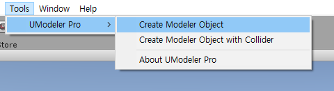
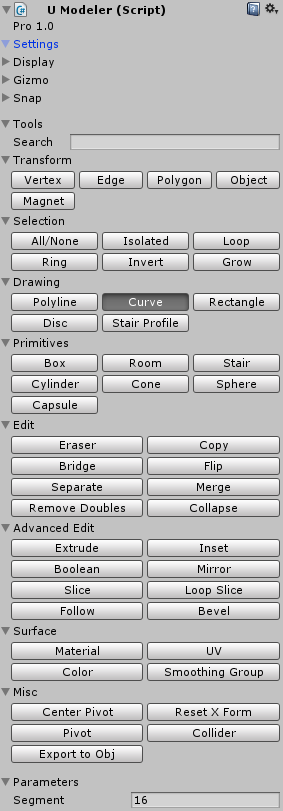
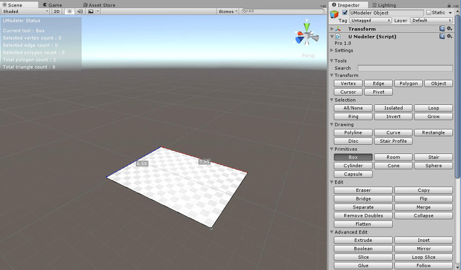
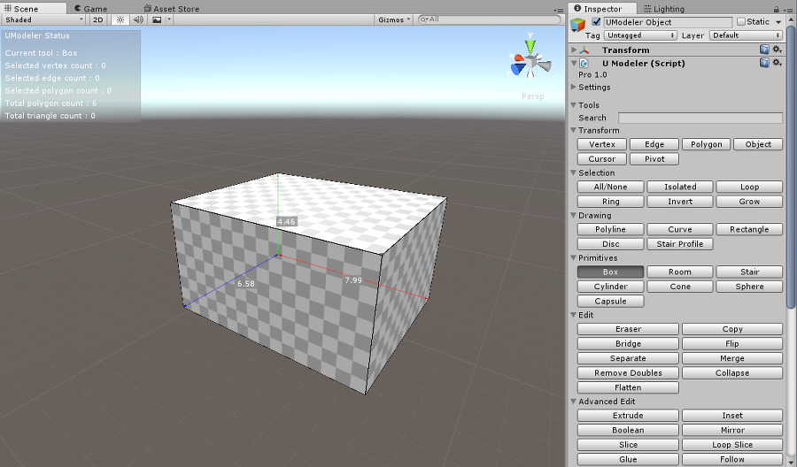
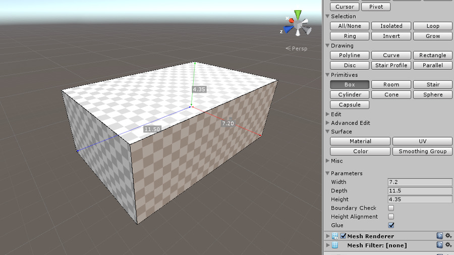
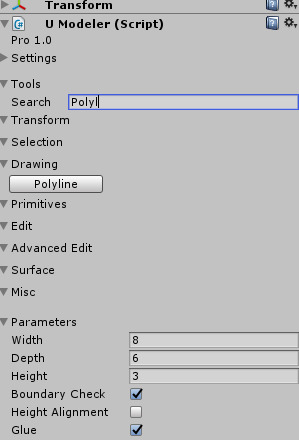
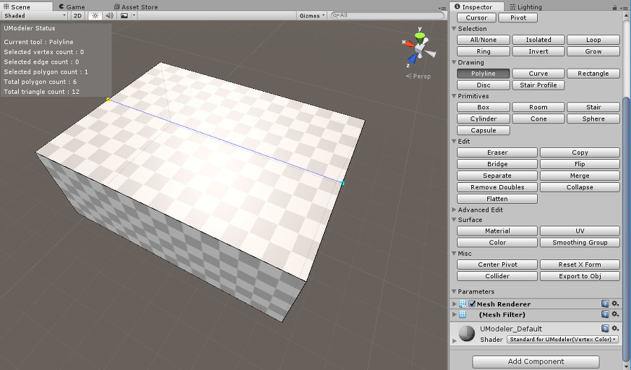
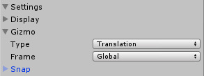
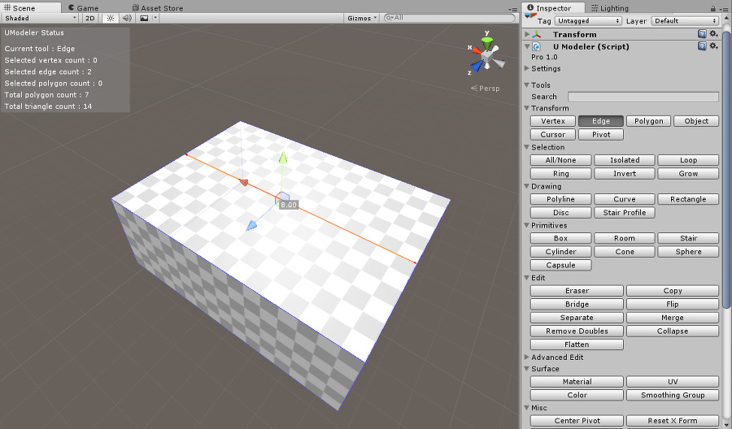
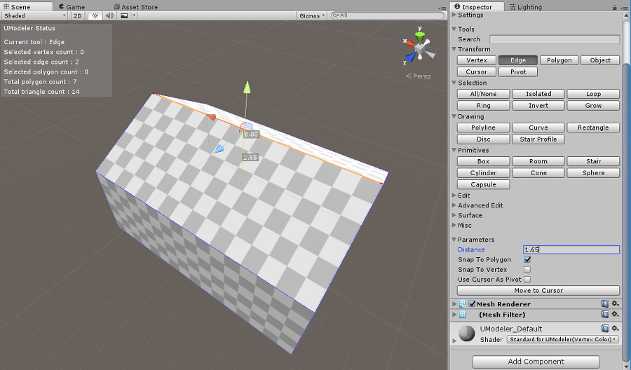

Basic Frame¶
- To begin with, create a game object with a UModeler component by choosing [Tools] - [UModeler Pro] - [Create Modeler Object].
Or you can add a UModeler component in a game object which is already created.
Once UModeler component is added to a game object, you can see the UModeler menu on the inspector window. You may be familiarized with some buttons below. Even if not, don’t worry because you’ll get used to them after you finish this tutorial.
2. Choose Box button in the menu panel. And drag a mouse holding LMB anywhere on the floor to draw a rectangle. When a rectangle is made(The size doesn’t matter this time), release your finger from LMB and raise a mouse cursor. When a box is made, Click LMB.
3. The exact size doesn’t matter until now because you’ll enter the size you want on the parameter window. Fill in each editor box called Width, Depth and Height with 7.2, 11.5 and 4.35 in order. The unit is meter.
4. Now we’ll make a roof. Choose the Polyline button under Drawing group. If it’s hard for you to find the button, Press Enter key so that Search edit box under Tools in the inspector is enabled. Enter “Polyl” there. Then only Polyline button will get displayed as follows. Press Enter button again so that the Polyline tool will be selected.
5. Polyline is to draw multiple lines on surfaces. Put a gray rectangle cursor nearby the center of an edge of top of the box as follows. You’ll find out that the cursor’ll get snapped to the exact center of the edge automatically and then the color of the cursor will changed to yellow.

- At this point click LMB and move the mouse cursor to the center of the opposite edge and then click LMB again to draw an edge which divide the top rectangle into two.
7. After stoping drawing lines by pressing ESC, select Edge tool under Tranform group in the inspector. If you can’t find the Edge button, use Search window as you did before. Choose the edge drawn in 5 step by click LMB on the edge. The selected edge’s color will change to orange and the gizmo will be located at the center of the edge. If the gizmo isn’t the translation type, press W or set Setting/Gizmo/Type in Inspector to Translation.

- Raise the selected edge by dragging up the up arraow of the gizmo by around 1m. And then enter 1.65 in Distance edit box under Parameter in the inspector.
Now the basic frame has been done!